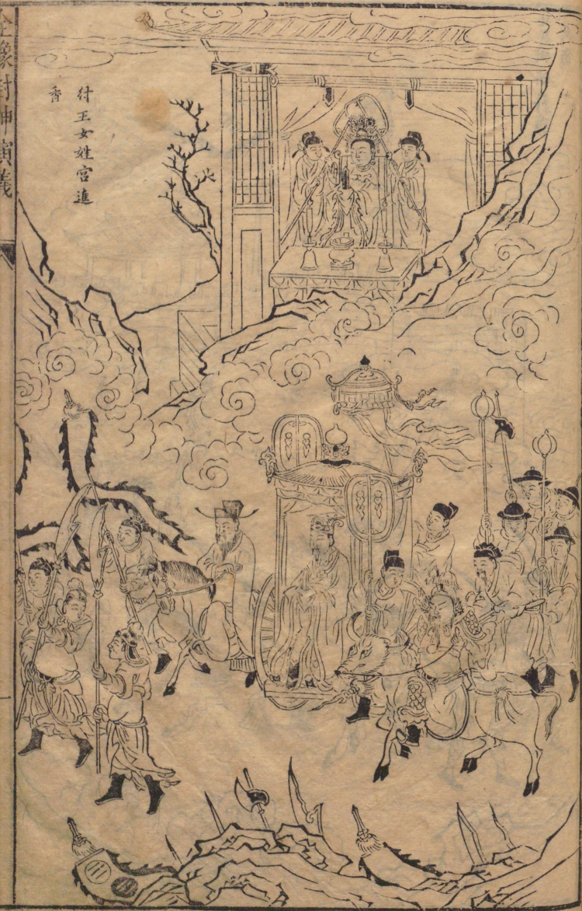

Illustrations of Chapter 1 to Chapter 10
Index

Chapter 1: King Zhou Offers Incense at Nuwa's Temple (纣王女娲宫进香)
Chapter 2: Marquis of Jizhou, Su Hu, Rebels against the Shang (冀州侯苏护反商)
 Chapter 3: Ji Chang Comes to the Rescue; Daji is Offered as Tribune (姬昌解围进妲己)
Chapter 3: Ji Chang Comes to the Rescue; Daji is Offered as Tribune (姬昌解围进妲己)
Chapter 4: The Fox Demoness Kills Daji at the Enzhou Inn (恩州驿狐狸死妲己)
Chapter 5: Yunzhong Zi Presents the Demon-killing Sword to King Zhou (云中子进剑除妖)
Chapter 6: Zhou the Tyrant Builds the Bronze Burner (纣王无道造炮烙)
Chapter 7: Fei Zhong Deposes Queen Jiang through Trickery (费仲计废姜皇后)
 Chapter 8: Fang Bi and Fang Xiang Escape from Zhaoge (方弼方相反朝歌)
Chapter 8: Fang Bi and Fang Xiang Escape from Zhaoge (方弼方相反朝歌)
 Chapter 9: Shang Rong Dies for his Principles in the Nine Palaces (商容九间殿死节)
Chapter 9: Shang Rong Dies for his Principles in the Nine Palaces (商容九间殿死节)
Chapter 10: Duke Ji Adopts Thunderbolt at Mt. Yan (姬伯燕山收雷震)
Next: Chapter 11 to 20